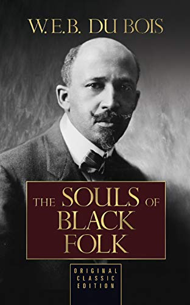

In This Issue
This is a test
Calendar
Themes for the Month
Men and Boy's Health Awareness Month
- Proclamation from past Governor Jay Inslee on the justification for Men's Health Awareness Month
- Presentation from OHSU medical staff related to Boy's Health and current findings
- NIH - (STUDY) Adolescent boys' experiences of mental health and school health services
Lesbian, Gay, Bisexual and Transgender Pride Month
- Library of Congress LGBTQ+ awareness resources and history: OVERVIEW | ABOUT | RESOURCES | AUDIO & VIDEO
- 2SLGBTQIA+ History in Washington State
National Safety Month
Reading List for the Month
Juneteenth Freedom Day - June 19th

Test 2
Test 3
Getting Ready for [Season] Resources
Test